# The usual suspects
library(tidyverse)
library(here)
# GAMM-specific libraries
library(mgcv)
library(itsadug)
library(gratia)
# Non-essential. Used in my `bam` to determine how many CPU cores to use.
library(parallel)
# NZILBB vowel package
# If you do not have this use the following lines of code:
# install.packages('remotes')
# remotes::install_github('nzilbb/nzilbb_vowels')
library(nzilbb.vowels)
# Set ggplot theme
theme_set(theme_bw())7 Generalized Additive (Mixed) Models
7.1 Overview
This chapter is going to grow over three initial sessions. The rough plan is:
- Introduction to the idea of GAMs and how to specify parametric and smooth terms.
- The second ‘M’: we’ll add random effects, looking at random intercepts, slopes, and smooths.
- Handling auto-correlation. How to work out when this is an issue, and the available options for solving it.
We will be using the following libraries:
This workshop is heavily indebted to the workshops put together by Márton Sóskuthy and Martijn Wieling. Links to these are provided in Section 7.7.
7.2 Introduction to GAMs
7.2.1 Why?
Straight lines have a lot of advantages. They can be completely specified by two numbers: how steep they are (the slope) and where they intersect the \(y\)-axis (the intercept). Fitting a straight line through a collection of points is just a matter of finding the optimum slope and intercept.
But sometimes straight lines aren’t enough. There are plenty of effects in nature which do not follow a straight line. There are plenty of examples of trajectories with non-linear behaviour in the study of language. For instance, consider the following trajectory for the price vowel from ONZE via (Sóskuthy, Hay, and Brand 2019).1
To view the code click here
# Source: https://osf.io/74mza
# Load all data (we will use the full set later)
price <- read_rds(here('data', 'price_anon.rds'))
# The dataset will be explained in full below.
# Pull out a single trajectory.
price <- price |>
filter(id == "price_58") |>
pivot_longer(
cols = f1:f2,
names_to = "formant_type",
values_to = "formant_value"
)
# Plot it
price_plot <- price |>
ggplot(
aes(
x = time,
y = formant_value,
colour = formant_type
)
) +
geom_point() +
labs(
colour = "Formant type",
y = "Frequency (Hz)",
x = "Time (s)"
)
price_plot
If we try to fit this trajectory with straight lines, we get:
To view the code click here
price_plot +
geom_smooth(method = "lm", se = FALSE)
What we want instead, is a way to fit a non-linear relationship. GA(M)Ms provide one flexible way of doing this. A simple GAM for this trajectory looks like this:
To view the code click here
price_plot +
geom_smooth(method = "gam", se = FALSE)
The same comments apply to trajectories taken from, e.g., tongue sensors or derived from video footage. They also apply at very different time scales. Consider GAMMs fit through full monologues (Wilson Black et al. 2023), or to formant values across the history of a dialect (Brand et al. 2021).
Note
You may have used polynomial models in the past. These models add terms such as \(x^2\) and \(x^3\) to models (where previously, only \(x\) was included). You can do a lot with polynomial models, but they have some negative properties. For a brief and accessible explanation of the shortcomings of polynomial models compared to GAMMs see the motivating example section from the following Gavin Simpson video: https://youtu.be/Ukfvd8akfco?si=COncckzAvpqvfIfj&t=107. A key issue with polynomial models, especially when the \(n\) in \(x^n\) gets very large, is called Runge’s Phenomenon. At the edges of the range of the data, high order polynomials become very unstable.
Sóskuthy (2017) introduces polynomial models as, in effect, a simple kind of GAMM. This is different from thinking of GAMMs as an alternative to polynomial models. Both are defensible views, but you may get confused if you try to think them both at the same time!
7.2.2 What?
We’ll start with a bit of mathematics. A linear model looks like this:
\[ y = \beta_0 + \beta_1 x_1 + \beta_2 x_2 + \ldots + \beta_n x_n + \epsilon \] where the \(\beta\)’s are the model coefficients, the \(x\)’s are the model predictors, and the \(\epsilon\) is an error term. The \(\beta_0\) term is the aforementioned intercept and the other \(\beta_n\)’s are slopes. These slopes estimate the effect of the attached predictor. For any predictor, all we get is a single slope and the intercept — a straight line.
GAMs replace each of the \(\beta_n x_n\) terms with a function of \(x_n\). This function will usually be some kind of smooth. We’ll look at this visually in a moment. But, mathematically, the overall GAM model looks like this:
\[ y = \beta_0 + f_1(x_1) + f_2(x_2) + \ldots + f_n(x_n) + \epsilon .\] The parameters have been replaces by functions. Now, the nature of the relationship between a given predictor and \(y\) need not be a straight line.
The functions we choose attempt to balance smoothness and wiggliness. Wiggliness simply means deviation from a straight line. Smoothness indicates a lack of bumps. We are speaking intuitively, but this language is used by the mathematicians as well!.
Let’s consider one class of smooth, and how it can be used to balance these two demands: splines. Here, a set of basis functions is summed together to create a smooth line through the data.
The basis functions for one common set of splines looks like this ( borrowing code from Gavin Simpson):
To view the code click here
# Simulate 500 observations
set.seed(1)
N <- 500
data <- tibble(
x = runif(N),
ytrue = map_dbl(
x,
\(x) {x^11 * (10 * (1 - x))^6 + ((10 * (10 * x)^3) * (1 - x)^10)}
),
ycent = ytrue - mean(ytrue),
yobs = ycent + rnorm(N, sd = 0.5)
)
k <- 10
knots <- with(data, list(x = seq(min(x), max(x), length = k)))
sm <- smoothCon(s(x, k = k, bs = "cr"), data = data, knots = knots)[[1]]$X
colnames(sm) <- levs <- paste0("f", seq_len(k))
basis <- pivot_longer(cbind(sm, data), -(x:yobs), names_to = 'bf')
basis |>
ggplot(
aes(
x = x,
y = value,
colour = bf
)
) +
geom_line(lwd = 2, alpha = 0.5) +
guides(colour = FALSE) +
labs(x = 'x', y = 'b(x)')
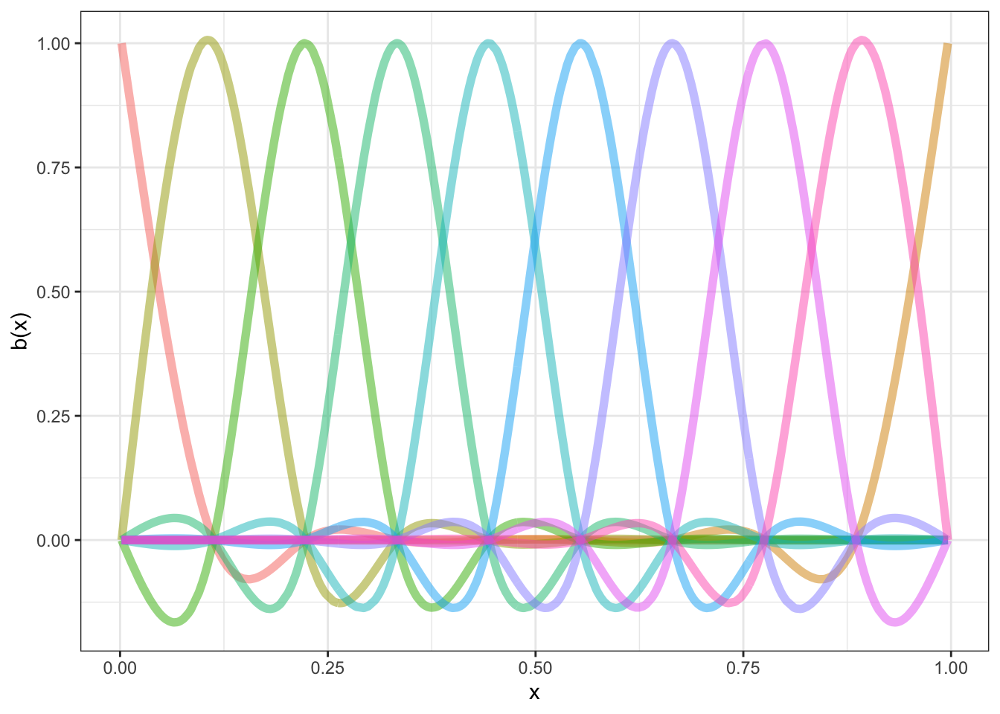
Each distinct ‘basis function’ is in a different colour. We fit out actual data by multiplying the functions by appropriate coefficients (to change how high they are on the graph) and adding them together.
There are a number of knots in Figure 7.1. These are the points at which the functions a joined together (informally speaking) and at which we aim to ensure smoothness. For this set of basis functions, the knots are at (red points):
To view the code click here
# Simulate 500 observations
set.seed(1)
N <- 500
data <- tibble(
x = runif(N),
ytrue = map_dbl(
x,
\(x) {x^11 * (10 * (1 - x))^6 + ((10 * (10 * x)^3) * (1 - x)^10)}
),
ycent = ytrue - mean(ytrue),
yobs = ycent + rnorm(N, sd = 0.5)
)
k <- 10
knots <- with(data, list(x = seq(min(x), max(x), length = k)))
sm <- smoothCon(s(x, k = k, bs = "cr"), data = data, knots = knots)[[1]]$X
colnames(sm) <- levs <- paste0("f", seq_len(k))
basis <- pivot_longer(cbind(sm, data), -(x:yobs), names_to = 'bf')
basis |>
ggplot(
aes(
x = x,
y = value,
colour = bf
)
) +
geom_line(lwd = 2, alpha = 0.5) +
geom_point(
inherit.aes = FALSE,
aes(
x = x
),
y = 0,
colour = "red",
data = as_tibble(knots),
size = 5
) +
guides(colour = FALSE) +
labs(x = 'x', y = 'b(x)')
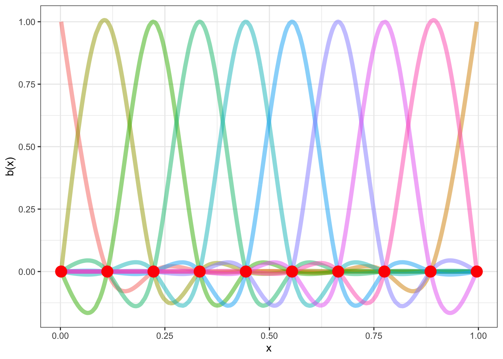
Again, borrowing code from Gavin Simpson, we can see what this looks like for our simulated data.
To view the code click here
beta <- coef(lm(ycent ~ sm - 1, data = data))
wtbasis <- sweep(sm, 2L, beta, FUN = "*")
colnames(wtbasis) <- colnames(sm) <- paste0("F", seq_len(k))
## create stacked unweighted and weighted basis
basis <- as_tibble(wtbasis) %>%
mutate(
x = data$x,
spline_fit = pmap_dbl(
# Yikes, bad coding here by me (JWB)
list(F1, F2, F3, F4, F5, F6, F7, F8, F9, F10),
sum
)
)
basis_long <- basis |>
pivot_longer(
cols = contains('F'),
values_to = "value",
names_to = "bf"
)
data |>
ggplot(
aes(
x = x,
y = yobs
)
) +
geom_point(alpha = 0.4) +
geom_line(
aes(
x = x,
y = value,
colour = bf
),
data = basis_long,
inherit.aes = FALSE,
linewidth = 1
) +
geom_line(
aes(
x = x,
y = spline_fit
),
inherit.aes = FALSE,
colour = "black",
linewidth = 1,
data = basis
) +
guides(colour = FALSE)
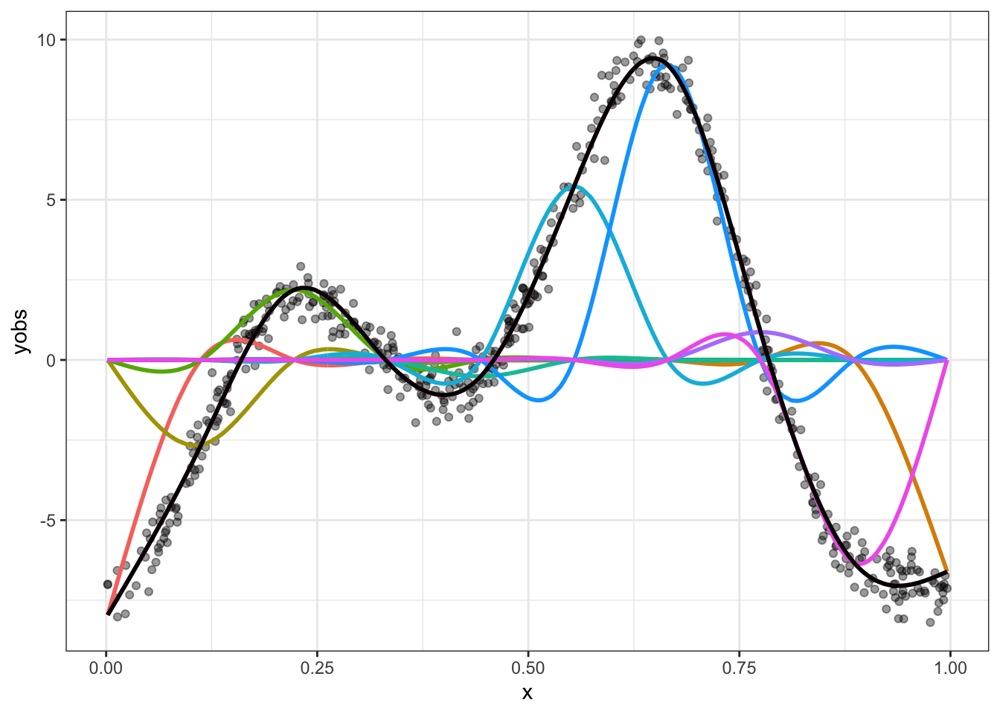
Spend some time looking at Figure 7.3. Convince yourself that if you added together the colourful lines you would get the black line. The easiest way to do this is to work one point on the \(x\)-axis at a time. The case where \(x=0\) is the easiest, where the only colourful line is the red one and it is at the same point on the \(y\)-axis as the black line.
What about this wiggliness and smoothness trade off? We’ve already seen one way in which wiggliness can be controlled: the number of knots sets an upper limit on how wiggly the resulting smooth function can be. If we only had 3 knots, this is what we would get:
To view the code click here
k <- 3
knots <- with(data, list(x = seq(min(x), max(x), length = k)))
sm <- smoothCon(s(x, k = k, bs = "cr"), data = data, knots = knots)[[1]]$X
colnames(sm) <- levs <- paste0("f", seq_len(k))
beta <- coef(lm(ycent ~ sm - 1, data = data))
wtbasis <- sweep(sm, 2L, beta, FUN = "*")
colnames(wtbasis) <- colnames(sm) <- paste0("F", seq_len(k))
## create stacked unweighted and weighted basis
basis <- as_tibble(wtbasis) %>%
mutate(
x = data$x,
spline_fit = pmap_dbl(
# Yikes, bad coding here by me (JWB)
list(F1, F2, F3),
sum
)
)
basis_long <- basis |>
pivot_longer(
cols = contains('F'),
values_to = "value",
names_to = "bf"
)
data |>
ggplot(
aes(
x = x,
y = yobs
)
) +
geom_point(alpha = 0.4) +
geom_line(
aes(
x = x,
y = value,
colour = bf
),
data = basis_long,
inherit.aes = FALSE,
linewidth = 1
) +
geom_line(
aes(
x = x,
y = spline_fit
),
inherit.aes = FALSE,
colour = "black",
linewidth = 1,
data = basis
) +
guides(colour = FALSE)
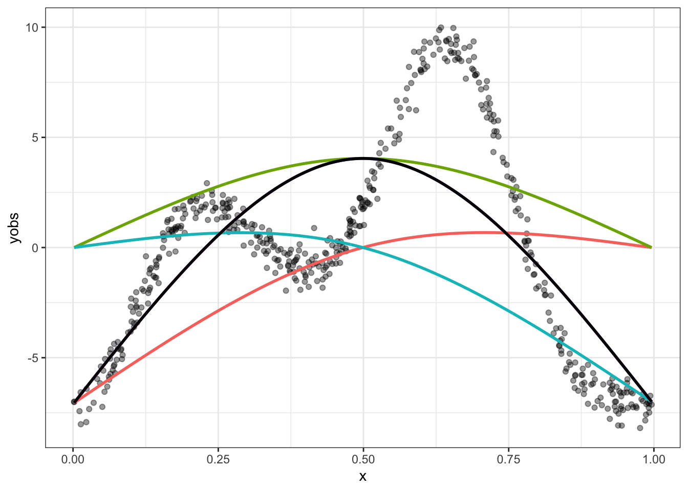
The black line is our best possible fit to the data here, but it is no good. It needs to be wigglier.
So knots are one determinant of wiggliness. But there is another: the smoothing parameter. This is used in order to penalise wiggliness when we fit a GAM model and is handled automatically by the mgcv package. In practice, it is determined from the data, rather than being manually specified. However, it is worth looking manually at what happens if we set the smoothing parameter too low and fail to sufficiently penalise wiggliness.
Here’s what an excessively wiggly smooth function looks like with the New Zealand English dress vowel in ONZE:
To view the code click here
onze_vowels_full |>
lobanov_2() |>
filter(
gender == "F",
vowel == "DRESS"
) |>
group_by(speaker) |>
summarise(
F1_lob2 = mean(F1_lob2),
yob = first(yob)
) |>
ggplot(
aes(
x = yob,
y = F1_lob2
)
) +
geom_jitter(alpha = 0.5) +
geom_smooth(
method = "gam",
formula = y ~ s(x, bs = "cs", k = 50, sp=0.01),
se=FALSE
)
On the other side, we can set the smoothing parameter too high. If we do, we’ll end up with a straight line.
To view the code click here
mean_onze_full <- onze_vowels_full |>
lobanov_2() |>
filter(
vowel == "DRESS"
) |>
group_by(speaker) |>
summarise(
F1_lob2 = mean(F1_lob2),
yob = first(yob),
speech_rate = mean(speech_rate),
gender = first(gender)
)
mean_onze_full |>
filter(gender == "F") |>
ggplot(
aes(
x = yob,
y = F1_lob2
)
) +
geom_jitter(alpha = 0.5) +
geom_smooth(
method = "gam",
formula = y ~ s(x, bs = "cs", k = 50, sp=10000000),
se=FALSE
)
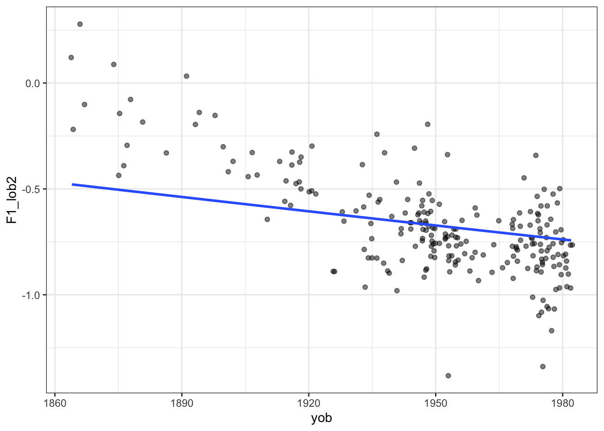
Tip
We are in the broad area of a core data science concept: the ‘bias variance tradeoff’. That is, with any statistical learning method, we can introduce errors with the assumptions of our model (bias) and errors due to excessively following small fluctuations in our data (variance). But the less bias we include, the more we will be lead astray by noise and vice versa. It’s a tradeoff.
In the case we are looking at now, reducing the smoothing parameter is equivalent to decreasing bias and increasing variance.
See the Wikipedia page.
7.2.3 Fitting GAMs with mgcv
How do we specify GAMs with the mgcv package? Let’s start with model formulae.
The most obvious this is the construction of smooth terms. These use the s function. Let’s look at the ONZE data from Figure 7.5 and Figure 7.6. Here we want normalised first formant values to vary with year of birth in a non-linear way. We want a smooth on year of birth.
What are the column names here?
mean_onze_full# A tibble: 481 × 5
speaker F1_lob2 yob speech_rate gender
<fct> <dbl> <int> <dbl> <fct>
1 CC_f_007 -0.765 1982 5.76 F
2 CC_f_010 -0.554 1947 5.06 F
3 CC_f_020 -0.242 1936 5.04 F
4 CC_f_024 -0.760 1973 5.61 F
5 CC_f_025 -0.747 1949 4.63 F
6 CC_f_027 -0.962 1981 5.22 F
7 CC_f_033 -0.725 1953 4.82 F
8 CC_f_040 -0.731 1955 4.24 F
9 CC_f_051 -0.769 1955 4.67 F
10 CC_f_052 -0.838 1942 5.61 F
# ℹ 471 more rowsThe variable we want to explain is F1_lob2. This contains normalised mean first formant values for each speaker. We want to explain it using `yob’, which we can see from the tibble output, is an integer. We’ll look at incorporating the other variables later.
The simplest version of the formula is this: F1_lob2 ~ s(yob). But this is usually bad practice — we should be more explicit! As a general principle, relying on defaults is dangerous as they can change under you, causing your code to have a different outcome.
The first area to be explicit is the knots. The default value for many smoothing splines is \(10\) and this is almost always fine. But we should think about it each time we fit a GAMM. So, an improvement: F1_lob2 ~ s(yob, k = 10).
The second argument to highlight is bs. This says what kind of basis functions we are using. The default, tp, or thin plate regression splines, are fine. Typically this choice won’t make a big different to you. But I will add more detail here soon. Regardless, it is good to make this explicit. So our final version of this formula: F1_lob2 ~ s(yob, k = 10, bs = "tp").
What do we do with this formula? We will use the function bam to fit our first GAM.
Note
We could just as easily use the gam function, but bam is optimised for large datasets.
Warning
The mgcv package requires the openmp library to take advantage of the parallel processing available through bam(). This is typically not a problem for Windows and Linux installations of R. On macos, it can be a problem.
If you get a warning about openmp not being available on macos. I suggest you install the mandatory tools listed here: https://mac.r-project.org/tools/ and then follow the instructions at https://mac.r-project.org/openmp/.
This is not likely to be a pleasant experience, especially if you don’t like battling with the command line. UC and NZILBB researchers and students, feel free to message me on Rocket.Chat or via joshua.black@canterbury.ac.nz and I may be able to help.
onze_fit <- bam(
formula = F1_lob2 ~ s(yob, k = 10, bs = "tp"),
data = mean_onze_full
)We obtain a summary for this model using the summary function:
summary(onze_fit)
Family: gaussian
Link function: identity
Formula:
F1_lob2 ~ s(yob, k = 10, bs = "tp")
Parametric coefficients:
Estimate Std. Error t value Pr(>|t|)
(Intercept) -0.590123 0.008102 -72.84 <2e-16 ***
---
Signif. codes: 0 '***' 0.001 '**' 0.01 '*' 0.05 '.' 0.1 ' ' 1
Approximate significance of smooth terms:
edf Ref.df F p-value
s(yob) 3.633 4.481 178.6 <2e-16 ***
---
Signif. codes: 0 '***' 0.001 '**' 0.01 '*' 0.05 '.' 0.1 ' ' 1
R-sq.(adj) = 0.625 Deviance explained = 62.8%
fREML = -138.75 Scale est. = 0.031571 n = 481This summary has two primary sections. The Parametric coefficients, which indicate the non-smooth aspects of the model. In this case, the model fits an intercept term, which sets the overall height of the smooth function. The Approximate significance of smooth terms section indicates, as it says, the approximate significance of our smooths. This is the GAM equivalent of the coefficient for a variable in a linear model.
In this model, we only have s(yob) to look at. We see that it has an edf or ‘estimated degrees of freedom’ of 3.633. This is an indication of how wiggly the line is. If the esimated degrees of freedom are 1, it’s pretty much a straight line. We also see a p-value entry. This indicates whether the shape of the smooth is statistically significantly different from a flat line at the intercept value. In this case, unsurprisingly, it is distinct from a flat line.
But there are some problems here. First, we are merging male and female data together here. What if we want to fit a smooth for both male and female speakers? Here we can us the by argument to s() and add a parametric term for gender. This results in:
onze_fit_gender <- bam(
formula = F1_lob2 ~ gender + s(yob, by = gender, k = 10, bs = "tp"),
data = mean_onze_full
)
summary(onze_fit_gender)
Family: gaussian
Link function: identity
Formula:
F1_lob2 ~ gender + s(yob, by = gender, k = 10, bs = "tp")
Parametric coefficients:
Estimate Std. Error t value Pr(>|t|)
(Intercept) -0.64493 0.01146 -56.255 < 2e-16 ***
genderM 0.10157 0.01565 6.492 2.13e-10 ***
---
Signif. codes: 0 '***' 0.001 '**' 0.01 '*' 0.05 '.' 0.1 ' ' 1
Approximate significance of smooth terms:
edf Ref.df F p-value
s(yob):genderF 2.754 3.394 72.13 <2e-16 ***
s(yob):genderM 1.000 1.000 588.35 <2e-16 ***
---
Signif. codes: 0 '***' 0.001 '**' 0.01 '*' 0.05 '.' 0.1 ' ' 1
R-sq.(adj) = 0.658 Deviance explained = 66.2%
fREML = -156.83 Scale est. = 0.028773 n = 481Now we have two intercept terms, one for the female speakers and one for the male, both of which are significant. Just as in generalised linear models, the genderM parametric term gives a difference from the female intercept. This indicates that the first formant value is on average higher for male speakers. In the smooth terms section we now see s(yob):genderF and s(yob):genderM. We get independent p-values for each. What we do not get is a representation of the difference between the smooth for the female speakers and the smooth for the male speakers.2
Note that the smooth for the male speakers in effectively a straight line. We will see this in a moment when we visualise.
We will add one more thing to this model before turning to diagnostics and plotting. What if we want two smooths? We know that speech rate can affect formant values. We can add this as an additional smooth term as follows:
onze_fit_rate <- bam(
formula = F1_lob2 ~ gender +
s(yob, by = gender, k = 10, bs = "tp") +
s(speech_rate, k = 10, bs = "tp"),
data = mean_onze_full
)
summary(onze_fit_rate)
Family: gaussian
Link function: identity
Formula:
F1_lob2 ~ gender + s(yob, by = gender, k = 10, bs = "tp") + s(speech_rate,
k = 10, bs = "tp")
Parametric coefficients:
Estimate Std. Error t value Pr(>|t|)
(Intercept) -0.64505 0.01148 -56.176 < 2e-16 ***
genderM 0.10180 0.01568 6.492 2.14e-10 ***
---
Signif. codes: 0 '***' 0.001 '**' 0.01 '*' 0.05 '.' 0.1 ' ' 1
Approximate significance of smooth terms:
edf Ref.df F p-value
s(yob):genderF 2.754 3.393 64.128 <2e-16 ***
s(yob):genderM 1.000 1.000 488.583 <2e-16 ***
s(speech_rate) 1.000 1.000 0.082 0.775
---
Signif. codes: 0 '***' 0.001 '**' 0.01 '*' 0.05 '.' 0.1 ' ' 1
R-sq.(adj) = 0.658 Deviance explained = 66.2%
fREML = -153.06 Scale est. = 0.028828 n = 481In this case we don’t see a significant difference as a result of speech rate. This may be because we are working with mean values for the formants. Once we can include random effects, and thus multiple values from a single speaker, this will change!
Tip
Wieling (2018) provides an example of building up a model from the ground up, exploring many different possible structures and including the R code. It is a good first port of call for looking at additional possible structures.
7.2.4 Model diagnostics
The primary port of call for model diagnostics in mgcv is the gam.check() function. One of the outputs is a text output to help determine if \(k\) is too low.
gam.check(onze_fit_rate)
Method: fREML Optimizer: perf newton
full convergence after 15 iterations.
Gradient range [-1.027586e-06,1.027607e-07]
(score -153.0627 & scale 0.02882816).
Hessian positive definite, eigenvalue range [2.671181e-07,238.0032].
Model rank = 29 / 29
Basis dimension (k) checking results. Low p-value (k-index<1) may
indicate that k is too low, especially if edf is close to k'.
k' edf k-index p-value
s(yob):genderF 9.00 2.75 1.00 0.530
s(yob):genderM 9.00 1.00 1.00 0.460
s(speech_rate) 9.00 1.00 0.93 0.065 .
---
Signif. codes: 0 '***' 0.001 '**' 0.01 '*' 0.05 '.' 0.1 ' ' 1The output above has an entry for each smooth term in the model. k' indicate the knots the smooth function has available. This, as explained above, is an upper limit on wiggliness. It will usually be one less than the value of k given in the model formula. The value edf indicates the actual wiggliness of the smooth. To determine if there is evidence of insufficient k, check whether the p-value is low and the edf is close to k'. If so, consider increasing k in the model. In this case, k is plenty high enough.
Let’s see a case where this doesn’t work well.
sim_fit <- bam(
formula = yobs ~ s(x, k = 3, bs = "cr"),
data = data
)
gam.check(sim_fit)
Method: fREML Optimizer: perf newton
full convergence after 11 iterations.
Gradient range [-2.519727e-09,2.506653e-09]
(score 1287.688 & scale 9.969049).
Hessian positive definite, eigenvalue range [0.4972726,249.001].
Model rank = 3 / 3
Basis dimension (k) checking results. Low p-value (k-index<1) may
indicate that k is too low, especially if edf is close to k'.
k' edf k-index p-value
s(x) 2 2 0.03 <2e-16 ***
---
Signif. codes: 0 '***' 0.001 '**' 0.01 '*' 0.05 '.' 0.1 ' ' 1Here k' and edf are the same, and the p-value is very low. Something is going wrong here. In fact, the problem here is the same problem we saw in Figure 7.4.
If you run gam.check you will also see some diagnostic plots. I have suppressed them in this document. The gratia package provides a nice wrapper for the gam.check visualisations (via the appraise function). It has the advantage of being a single plot in ggplot format which will take on any global changes to you ‘theme’. That is, it will produce output which matches your other plots.
Let’s look at the bad fit to our simulated data again:
appraise(sim_fit)
These plots tell us something about the residuals. The assumption of our model is that these residuals will be normally distributed. That is, we assume that the variation which is left behind by our model looks like random observations from a normal distribution.
These diagnostic plots are not like this. At the top left, we should see a straight line of black points following the red line. However, we see that at the tails, at extreme values of a predictor, we are not getting what we would expect from a normal distribution. The histogram tells a similar story. This should look like a nice(ish) bell curve. But the most extreme warning signs are the two plots on the right. These show the model predictions plotted against the actual values. There should be no obvious (non-linear) pattern in these plots.
We already know what to do in this case, we need to increase \(k\)! If we do, this is what we get:
sim_fit_highk <- bam(
formula = yobs ~ s(x, k = 20, bs = "cr"),
data = data
)
appraise(sim_fit_highk) 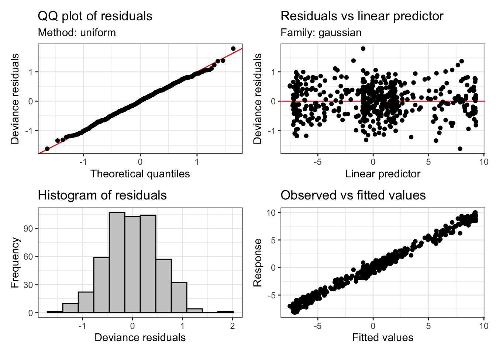
Much better! And the check of k looks OK too:
gam.check(sim_fit_highk)
Method: fREML Optimizer: perf newton
full convergence after 5 iterations.
Gradient range [-1.018439e-06,1.032479e-06]
(score 434.2567 & scale 0.2813964).
Hessian positive definite, eigenvalue range [8.433327,249.2893].
Model rank = 20 / 20
Basis dimension (k) checking results. Low p-value (k-index<1) may
indicate that k is too low, especially if edf is close to k'.
k' edf k-index p-value
s(x) 19.0 17.7 1.1 0.98Returning to our model of the ONZE data, let’s use appraise again:
appraise(onze_fit_rate)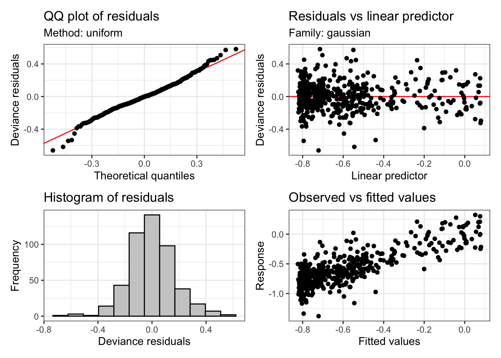
This looks basically fine. But we can see heavier tails that we would usually want at either end of the QQ plot and the histogram. This is quite common in vocalic data. One way to handle this is to assume that the residuals follow a t distribution instead (these have fatter tails than normal distributions). We can do this with the family argument to bam. If we do this, the plots look a bit better:
onze_fit_rate <- bam(
formula = F1_lob2 ~ gender +
s(yob, by = gender, k = 10, bs = "tp") +
s(speech_rate, k = 10, bs = "tp"),
data = mean_onze_full,
family = scat(link="identity")
)
appraise(onze_fit_rate)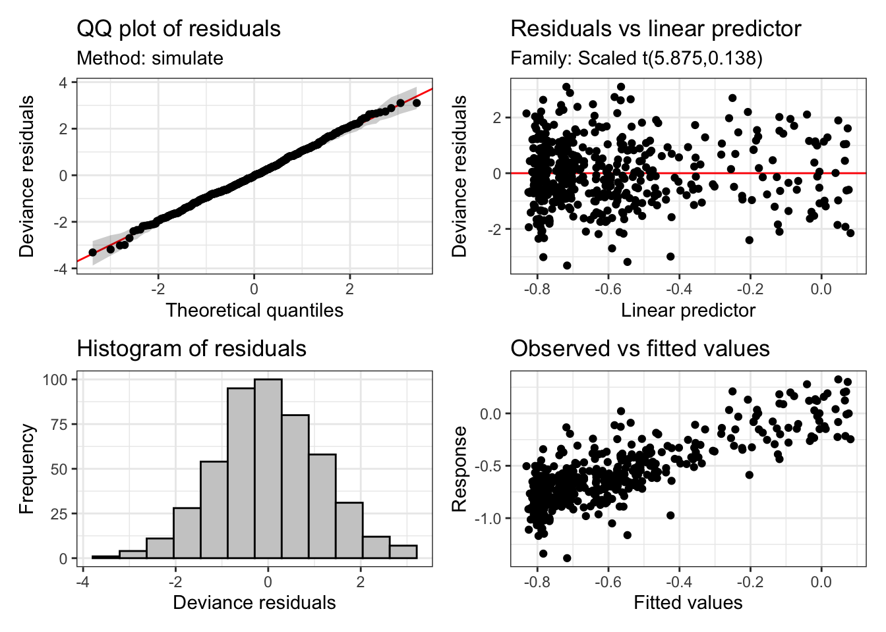
We will see a case below where a t-distribution functions better than a standard normal distribution with formant data. It is worth checking this case-by-case though.
7.2.5 Plotting
Plotting smooths can be done in at least three ways:
- Using a prediction function to generate predictions from the model and then plot them yourself. The advantage is high flexibility in your plots.
- Use the
plot_smooth()and related functions fromitsadug. - Use the GAM plotting functions from
gratia.
Let’s look at the plot_smooth() function. This has been used in a lot of projects at NZILBB.
plot_smooth(
x = # the model,
view = # the name of the variable you want to plot.
cond = # a named list containing the values of other terms in the model.
# if not given you will get mean values.
plot_all = # The name of any factors which for which you want all levels to be
# plotted
rug = # display a 'rug' at the bottom of the plot to indicate where there are
# actual observations.
)Now, using these to plot the ONZE model, we get:
plot_smooth(
x = onze_fit_rate,
view = "yob",
plot_all = "gender",
rug = TRUE
)Summary:
* gender : factor; set to the value(s): F, M.
* yob : numeric predictor; with 30 values ranging from 1864.000000 to 1982.000000.
* speech_rate : numeric predictor; set to the value(s): 4.86001666666667.
* NOTE : No random effects in the model to cancel.

Note that the values given for other predictors are given in console output.
Now change the view and cond arguments and see what happens.
The draw() function from gratia is very useful for plotting the ‘partial effects’ of each smooth term. Let’s look at an example and then consider what this means in more detail.
draw(onze_fit_rate)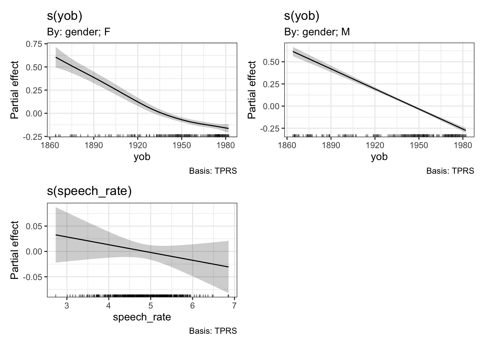
The difference between ‘summed effects’, which you get in plot_smooth(), and the ‘partial effects’ produced by draw(), is that summer effects include intercept terms and values for other predictors. We’ve seen above that plot_smooth() produces an output message which states what the level of the other predictors has been set to. The draw() function, and the mgcv function plot.gam(), instead show the effect of the smooth terms individually. These will be centred around \(0\).
7.2.6 Interactions
Often we are interested in how two predictors interact to generate a response. We have already seen one version of this: continuous by factor interactions created using the by argument to s(). We determined the change over time in ONZE independently for male and female speakers.
There are also methods for including continuous by continuous interactions in GAMMs. The two main functions to consider are ti() and te().
The ti() function produces a ‘tensor product interaction’. With the example data from ONZE we have been using there are only two predictors which can be naturally treated as continuous: year of birth and speech rate. In order to interact these predictors, we could add a ti() term. This is done by the following code block. For the purposes of this example we remove gender from the model, but we will add it in again in a moment. The use of k=5 just makes the default behaviour for this kind of smooth explicit.
onze_fit_int <- bam(
formula = F1_lob2 ~
s(yob, k = 10, bs = "tp") +
s(speech_rate, k = 10, bs = "tp") +
ti(yob, speech_rate, k=5, bs = "tp"),
data = mean_onze_full,
family = scat(link="identity")
)
draw(onze_fit_int)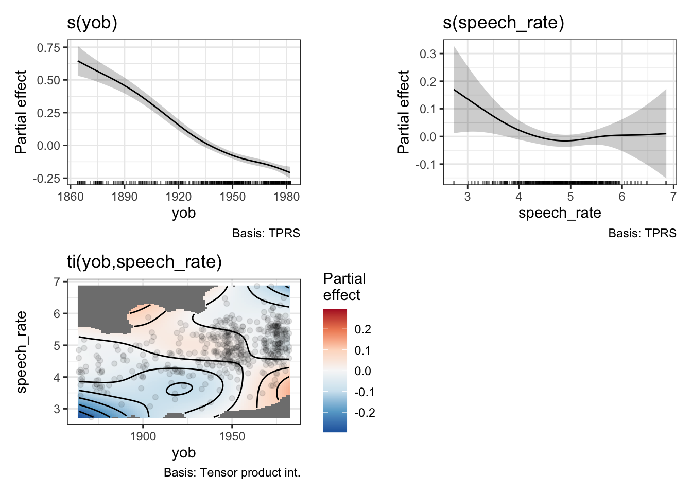
We now get a heat map, which represents the interaction. In order to read the heat map, find the values of the predictors on the \(x\) and \(y\) axis and then use the colour guide to determine what to add to the partial effects of the predictors. For instance, if we look in the bottom left of the heatmap we see a patch of blue. This indicates that early speakers who are slow tend to have lower F1 values for dress. This is to say, they start from a higher position in the vowel space (although still low relative to contemporary New Zealand English speakers). The heatmap helpfully greys out areas in which there are no datapoints.
What does this look like in a model summary? Here is the relevant table:
summary(onze_fit_int)$s.table edf Ref.df F p-value
s(yob) 3.975988 4.909228 74.411993 0.00000000
s(speech_rate) 2.696854 3.447972 1.896666 0.12778914
ti(yob,speech_rate) 5.684495 7.421081 1.863619 0.06482433There is a new line for the ti() term. We see that it does not achieve statistical significance at the \(0.05\) level.3
The function te() specifies a ‘tensor product smooth’. This includes the individual effects of any included predictors and their interaction. This means the formula for the model no longer has individual terms for year of birth and speech rate. This looks very simple:
onze_fit_te <- gam(
formula = F1_lob2 ~
te(yob, speech_rate, k=5, bs = "tp"),
data = mean_onze_full,
family = scat(link="identity")
)
draw(onze_fit_te)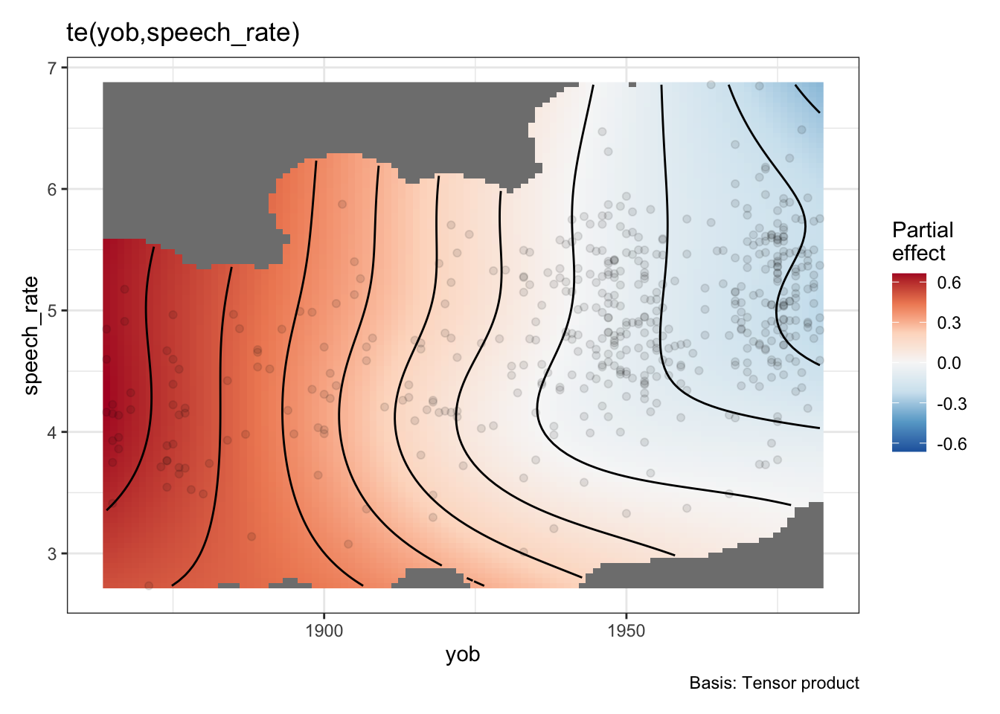
Now there’s only one smooth term, carrying all of the relationship between speech rate, year of birth, their interaction, and the normalised F1 of the dress vowel. This is, as one might imagine, less useful for testing specific hypotheses about the role of, say, speech rate, or year of birth. Indeed, if we look in the model summary, we will see one term:
summary(onze_fit_te)
Family: Scaled t(5.187,0.141)
Link function: identity
Formula:
F1_lob2 ~ te(yob, speech_rate, k = 5, bs = "tp")
Parametric coefficients:
Estimate Std. Error z value Pr(>|z|)
(Intercept) -0.592324 0.007391 -80.14 <2e-16 ***
---
Signif. codes: 0 '***' 0.001 '**' 0.01 '*' 0.05 '.' 0.1 ' ' 1
Approximate significance of smooth terms:
edf Ref.df Chi.sq p-value
te(yob,speech_rate) 10.94 13.68 974.5 <2e-16 ***
---
Signif. codes: 0 '***' 0.001 '**' 0.01 '*' 0.05 '.' 0.1 ' ' 1
R-sq.(adj) = 0.627 Deviance explained = 51.7%
-REML = -149.4 Scale est. = 1 n = 481There is no obvious way to unpack this information.
One final thing to note is that we can add by arguments to ti() and te() just as we did for s(). So, for instance, we might fit a model which has an interaction for speech rate, year of birth, and gender, as follows:
onze_fit_gen_int <- gam(
formula = F1_lob2 ~
s(yob, k = 10, by=gender, bs = "tp") +
s(speech_rate, k = 10, bs = "tp") +
ti(yob, speech_rate, by=gender, k=5, bs = "tp"),
data = mean_onze_full,
family = scat(link="identity")
)
draw(onze_fit_gen_int)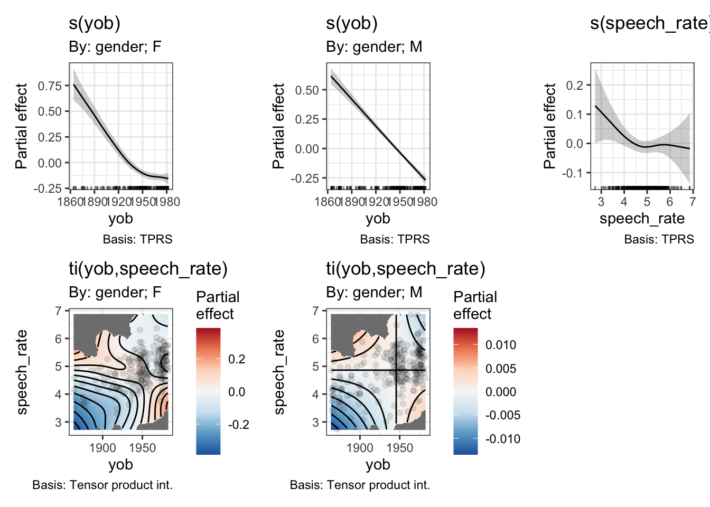
Now we have, in effect, a three way interaction. We get two distinct heatmaps, one for the interaction between year of birth and speech rate in the men, and one for the same interaction in the women.
Let’s look at the heat maps by themselves, as they are a little bit small.
draw(onze_fit_gen_int, select=c(4, 5))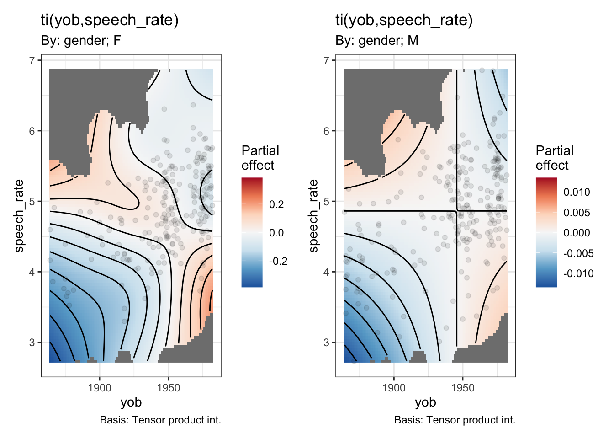
Note the very different colour scales for male and female speakers.
And look at the smooths section of the model summary:
summary(onze_fit_gen_int)$s.table edf Ref.df Chi.sq p-value
s(yob):genderF 3.447366 4.245710 191.16420928 0.0000000000
s(yob):genderM 1.224522 1.412964 360.09732544 0.0000000000
s(speech_rate) 2.541233 3.301794 5.69677023 0.1377318834
ti(yob,speech_rate):genderF 3.946719 5.233997 22.54341618 0.0005519912
ti(yob,speech_rate):genderM 1.000523 1.000995 0.02282337 0.8815218793This version of the model claims a statistically significant interaction between year of birth and speech rate for the female speakers. The rough story, from the heatmap, when combined with the smooth for year of birth for the female speakers, is that the change over time is more extreme for faster speakers and less extreme for slower speakers.4
7.3 The Second ‘M’: Mixed Effects
We can include quite complex random effects structures in GAMMs. As in the case of generalised linear models, we can add random intercepts and random slopes. GAMMs introduce the additional possibility of random smooths.
We’ll now switch to a data set which is more useful for illustrating the full range of random effects structures and which will also be useful when we turn to the question of auto-correlation later (Section 7.4).
The new data set comes from…
We will take trajectories from the price vowel, looking at both F1 and F2.
7.4 Auto-correlation
Auto-correlation is an issue in time series data. Often a measurement at one time point is correlated with measurements at nearby time points.
When talking about random effects in the previous section, we discussed them in terms of information. We can think of auto-correlation in the same way. Measurements from nearby time points do not provide independent information.
7.5 Hypothesis Testing
How do we test a GAMM model…
7.5.1 Visual methods
7.5.2 Model summary
7.5.3 itsadug::compareML().
7.6 Reporting a GAMM
It is important to know how to report a GAMM in a paper.
This section presents some (somewhat randomly selected) examples of GAMMs ‘in the wild’. All of these are good enough for publication. After the examples, I’ll give a few opinions about what ought to be included in the body of an article and in supplementary materials.
How did you fit the GAMMs?:
We built a separate GAMM for each combination of allophone, gender, and formant, leading to twenty-eight separate models. The dependent variable was log-means normalized formant values, from five measurement points per token. The models’ independent variables included a nonlinear, continuous smooth term for speaker year of birth (YoB), and a smooth term for measurement point (percent), ordered 20% to 80%. Smooths used four knots. The two smooths were combined into a tensor-product interaction allowing the predicted trajectory to freely vary in shape across YoB. Vowel duration was included as a parametric effect. The random effects structure comprised linear random intercepts and slopes for speaker, word, and collection. Model specifications and summaries appear in Appendix 1. Models were fitted using the mgcv::bam() function in R (Wood, 2017b). (Renwick et al. 2023, 185)
Appendix 1 contains the output of the summary() function for each GAMM model pasted in to a word document. This includes the model formulae.
How did you evaluate the GAMMs?
We evaluate the GAMMs in two ways: first, via visualizations of predicted measurements, which were extracted from each model. Second, we tested the significance of YoB via model comparison (Renwick & Stanley, 2020; Stanley et al., 2021). For each GAMM, we constructed a model that excluded YoB but was otherwise identical. Each “dropped” model was evaluated against its “full” equivalent via itsadug:: compareML() (van Rij, Wieling, Baayen, & van Rijn, 2017), which returns a score and p-value through chi-squared testing of log-likelihood. If the “full” model including birth year is deemed to be significantly better ( p < 0.05) than the “dropped” version without birth year, we infer that the shape and/or position of that vowel’s trajectory is meaningfully predicted by speaker year of birth. (Renwick et al. 2023, 185)
How did you report the results?
Model comparisons confirmed that for all models save one (F2 of PRY, for women) the inclusion of YoB provided a significant improvement in fit over an identical GAMM lacking that term. For all allophones (including women’s pry, whose F1 model is improved by YoB), there is significant variation in trajectory shape and/or vowel space position across time. (Renwick et al. 2023, 186)
A footnote indicates that pry has the lowest token count and the prediction that increased tokens would lead to an improvement by adding their year of birth term.
A series of figures are then described in detail. For instance:

The description is as follows:
Young Georgians’ trajectories are modeled in Figure 5, including birth years 1974 (left) and 2000 (right), representing Gen X and Gen Z. The vowel systems shown here are markedly different from older speakers’. For all groups, the /aɪ/ allophones’ offset has a lower F1 than bat, indicating its trajectory lengthening. bought remains slightly backer than bot, although they have similar ingliding trajectories. The lax front vowels have shifted. bat is ingliding and retracted, while bet is lower in Gen Z compared to Gen X. bait is very peripheral, especially in Gen Z, compared to the other front vowels, with a lower F1 and higher F2 throughout its trajectory. bait and bet are very distinct, and their trajectories do not cross; there is no face/dress swapping for these speakers. These effects are stronger for Gen Z than for Gen X. The picture shown for late twentieth century Georgians is not the SVS; instead, the Gen X speakers show a retreat from the SVS, characterized by retracting front lax vowels, which is consistent with the LBMS among younger, Gen Z speakers. [Renwick et al. (2023), 187
As in the Renwick et al. (2023) example, Brand et al. (2021) reports many GAMMs fit to readings from vowels. There is significantly more detail concerning the GAMMs in supplementary material for this paper hosted on osf.io and github.com. There is less detail in the paper itself, because the GAMMs are one stage in a larger method.
How did you fit the GAMMs?
In the paper the use of GAMMs is described as follows in the methodology section:
Speaker intercepts from linear mixed effects regression models have been used to index speaker advancement in sound change (Drager & Hay, 2012; Sóskuthy et al., 2017). The data we analyse here contains some non-linear effects, and thus an appropriate modelling technique to obtain the speaker intercepts from our data is generalised additive mixed modelling (GAMMs). This is because we want to model the normalised F1 and F2 of each of the 10 monophthongs separately, whilst also reliably capturing non-linear changes across time (see Winter & Wieling, 2016; Sóskuthy, 2017; Wieling, 2018 & Chuang et al., Chuang, Fon, & Baayen, 2020 for introductory tutorials on GAMMs). We fitted separate models to normalised F1 and F2 for each of the 10 vowels in the data set, giving 20 models in total.
All models were fitted using the same formula via the mgcv package in R (Wood, 2017), with fixed-effects comprising separate smooths over year of birth for each gender (using an adaptive smooth basis with 10 knots), as well as a smooth over speech rate. Speech rate is calculated as syllables per second for the transcript (where each speaker’s recording is spread across several transcripts. Individual transcripts contain on average approximately 6 min of speech). Random intercepts were included for speaker and word form. We then combined all of the speaker intercepts from the separate models, providing us with a final 481 X 20 data set, where each of the 481 speakers had a separate intercept for each of the 20 vocalic variables. (Brand et al. 2021, 8)
How did you report the results?
In the results section, the GAMMs are plotted, again in a vowel space: 
The GAMMs are discussed as follows:
While our primary purpose in fitting the GAMMs is to control for speaker factors such as year of birth, the major patterns revealed by the GAMMs also facilitate an understanding of sound change occurring over this time period, which is a necessary precursor to interpreting the patterns of co-variation. Fig. 5 shows the trajectories of vowel change, based on GAMM smooths over year of birth. All vowels have undergone some change, either linear or non-linear, based on the year of birth smooth effect (all p-values < 0.001), see the Supplementary Materials for the model summaries. An animated and interactive version of the changes is available in the Shiny application. (Brand et al. 2021, 9)
The above notes statistical significance of the year of birth smooths and points readers to mode detail if required. The next paragraphs of the results section describe the patterns in the plot in light of existing literature.
What is in supplementary material?
The supplementary material for the analysis is hosted on GitHub. It contains two relevant sections. First, a section with the code for fitting the models, which includes discussion of the model formula and the R code used to fit a series of models with the same formula (here). Second, there is a section containing all of the model summaries (here). These summaries do not contain information about random effects. We have seen above that this radically reduces the amount of time required to generate a model summary.
In addition, an online interactive is provided for exploring the analysis in the paper (including the GAMMs). See here.
Derrick and Gick (2021) is a shorter piece for Scientific Reports. Space is at a premium so a short explanation is given.
How did you fit the GAMMs?
The discussion of the GAMMs in the methodology sections comes after an earlier set of steps have already been described. Justification is given in terms of non-linearity in the data.
Next, and in order to make sense of this highly non-linear data, we ran a generalized additive mixed-effects model (GAMM) on the data shown in Eq. (7). GAMMs are extremely effective for the analysis of non-linear data, and are therefore highly suitable for the analysis of the critical fluctuations captured in Eq. (6).
Equation (7), written in R-code, describes a generalized additive mixed-effects model, comparing Fluctuation based on tongue-front displacement (TFd) and the fluctuation time slice position (FTS), forming a 3-dimensional tensor (te) field [te(FTS, TFd)]. The random effects factor out participant variability in a 3-dimensional tensor field [s(FTS, TFd, Participant, bs = “fs”, m = 1)], as well as random-effect smooths for syllables per second [s(SPS, Participant, bs = “re”)], and token type [s(Token type, Participant, bs = “re”)]. In order to correct for autocorrelation effects, we ran the GAMM, calculated an estimate for a start value ρ from that first run, and provided that ρ to a second run of the GAMM model, along with an indicator identifying the first position of our time slices. This removes most of the autocorrelation, maximizing the accuracy of the resulting statistical model output.
Equation (7) produces an output that shows the relationship between critical fluctuation, token position, and tongue-front displacement range, highlighting regions of significant difference. And with these methods, we were able to identify whether tongue-front displacement range affected speech-rate range, and whether tongue-front displacement range had any influence on the timing slice positions of critical fluctuations. (Derrick and Gick 2021, 8)
Equation 7 is the following R formula:
gam(Fluctuation ~ te(FTS, TFd) +
s(FTS, TFd, Participant, bs = "fs", m = 1) +
s(SPS, Participant, bs = "re") +
s(Tokentype, Participant, bs = "re")
)Note, btw, the use of all both random smooths (the second smooth term) and two smooth terms defining random slopes (the third and fourth smooth terms in the model).
The methods sections describes the method used to deal with autocorrelation as well.
Finally, a paragraph is given to explain the relationship between the output of the GAMMs and the actual subject matter of the research.
Citations are given in footnotes to R itself, the mgcv package and the itsadug package.
How did you report the results?
There results section reports both the significance of smooth terms and discusses a plot.
The main plot is Figure 7:
 The discussion is as follows:
The discussion is as follows:
Generalized additive mixed-effects model analysis of critical fluctuations during the time course of token production by tongue-front displacement range are shown in Fig. 7. The model shows that speakers producing tokens with the lowest tongue-front displacement ranges have relatively higher critical fluctuations in the early part of their token productions, spanning from the first vowel through the first flap into the middle of the second vowel. In contrast, they show much lower rates of critical fluctuation from the second half of the second vowel, through the second flap to the end of the third vowel. This constitutes evidence of end-state comfort effects for speakers producing token types with narrow tongue-front displacement ranges.
For speakers producing token types in the middle of the group, there are no end-state comfort effects, but instead the most effort made during the second flap. For speakers with very wide tongue-front displacement ranges, there is again statistically significant evidence for end-state comfort effects, with extra beginning-state effort for the initial vowel. These are the same speakers producing token types that demonstrate two categorically different patterns of motion—one for slow speech, and one for fast speech.
Figure 7 shows the regions of significance for the GAMM whose model output is shown in Table 3. These results show that all of the model parameters are significant, and most importantly that the tensor field shown in Fig. 7 accounts for a significant portion of the variance of the data. This includes the fixed-effect tensor relating tongue-front displacement range and critical fluctuation along time slices, as well as the random-effects for participant, token type, and reiterant speech rate. The entire GAMM accounts for an adjusted r2 of 0.452, explaining 47% of the deviance in critical fluctuations in this dataset. (Derrick and Gick 2021, 10–11)
Significance information is given as Table 3.

What is in supplementary materials?
There is a repository on OSF (here). Code is available as an Rmarkdown or as an HTML file to be downloaded and read in the browser.
The analysis shows that the p-values in Table 3 are generated by using itsadug::compareML() and fitting the models with maximum likelihood estimation. With more space, this might have been discussed in the paper. But there is not always more space!
What can we take from the above examples? Here are some reflections:
- You don’t need to say everything in the paper. You can use supplementary material. This should include, at a minimum, the specific code you used to fit the model and generate any reported p-values (not just the summary).
- This can be important for seeing, e.g., whether the ‘difference smooth’ structure was used (see discussion above).
- Cite the specific packages you used. The function
citation()in R can be very helpful for this (e.g. look at the results ofcitation('mgcv')). I often use the packagegratefulto generate a bibliography of all of the packages I use within an analysis project. - Visualisations are an important part of evaluating GAMMs (moreso than for linear models where a single coefficient is what you are testing).
- Your discussion section might consist of description of the specific trajectories you find visually.
- Supplementary material opens up many windows (including e.g., the interactive application in Brand et al. (2021)). This is also, however, a potential time sync. Try to balance the costs and benefits when you go beyond the requirements of open science and into the realm of web development!
7.7 Further Resources
- Márton Sóskuthy’s GAMM tutorial: https://arxiv.org/pdf/1703.05339.pdf
- Márton Sóskuthy’s paper compared multiple significance testing strategies for error rates: https://www.sciencedirect.com/science/article/pii/S009544702030108X#s0070
- Martijn Wieling’s tutorial: https://www.sciencedirect.com/science/article/pii/S0095447017301377
Note
Resources have also been written by non-Martins. I will add some soon!
If you are not familiar with this bit of linguistics, just think of this a set of readings derived from a single action. It could just as easily be a set of readings from a brain scan, or a moving slider, or whatever you like. The only restriction is that we have a set of measurements across time of the same event or action.↩︎
We will look at how to do this later in the series.↩︎
Hypothesis testing will be covered in more detail in Section 7.5.↩︎
You may have noticed that there is a correlation between speech rate and year of birth. This should be kept in mind when interpreting the model.↩︎